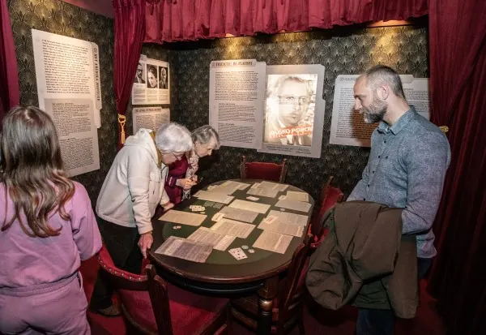
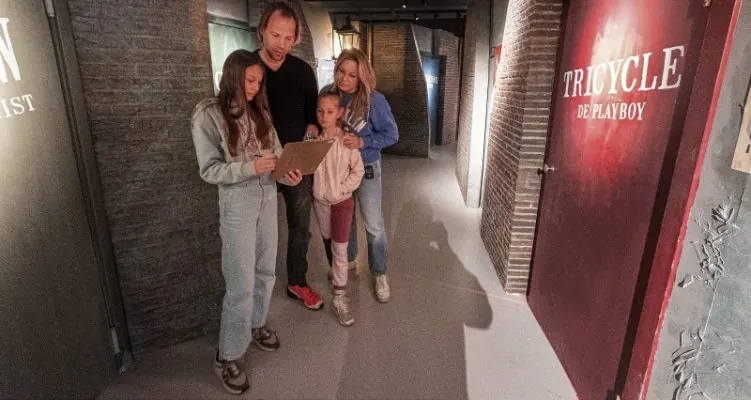

Nieuws ·
Vrijheidsmuseum Verlengt Zijn Geliefde 'Dubbelspion' Expositie

Bezoekers van het Vrijheidsmuseum worden meegenomen op een reis door de tijd bij de expositie ‘Dubbelspion’. In een omgeving die doet denken aan een halfdonkere steeg uit het verleden, verlicht door een nostalgische lantaarnpaal, komt de geschiedenis tot leven. Vele bezoekers hebben al de uitdaging aangenomen om de vier dubbelspionnen te identificeren, diep verborgen in de verhalen en raadsels van deze interactieve tentoonstelling.
Deze tijdelijke expositie, rijk aan boeiende spelelementen en diepgaande inhoud, heeft zowel jongeren als volwassenen gefascineerd. Bezoekers hebben met groot enthousiasme de mysteries ontrafeld. Dankzij deze populariteit heeft het Vrijheidsmuseum besloten om de tentoonstelling te verlengen tot 5 mei 2024.

De expositie belicht inspirerende figuren, zoals de man die model stond voor James Bond, en een fantasierijke bedrieger die de Duitse inlichtingendienst misleidde. Ontdek de verhalen achter het kraken van de Enigma-code, de onthullingen rond Pearl Harbor, en de cruciale rol van dubbelspionnen bij de landingen in Normandië. De verhalen worden tot leven gebracht met foto’s, video’s en authentieke objecten, waaronder een echte Enigma-machine, dankzij een verlengde bruikleen van het Centrum Wiskunde & Informatica (CWI).
Verken de jaren ’40 en ontrafel achter elke deur nieuwe mysteries. Test je vaardigheden door een code te kraken in een gevangeniscel, waag een spel in het casino, of leer vijanden te misleiden in een militair hoofdkwartier. Na deze historische ontdekkingstocht, neemt de tentoonstelling bezoekers mee naar het heden: bestaan er nog steeds dubbelspionnen? Hoe werkt misinformatie vandaag de dag? En kun jij ‘fake news’ herkennen?
Praktische Informatie:
– Locatie: Vrijheidsmuseum, Wylerbaan 4, 6561 KR Groesbeek
– Informatie: Tel: 024-3974404 of Email: welkom@vrijheidsmuseum.nl
– Website: www.vrijheidsmuseum.nl